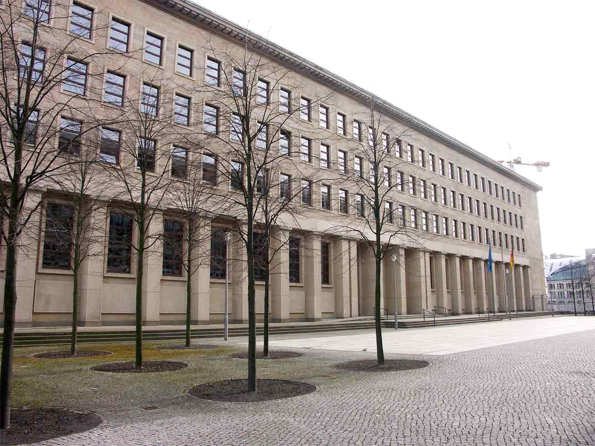
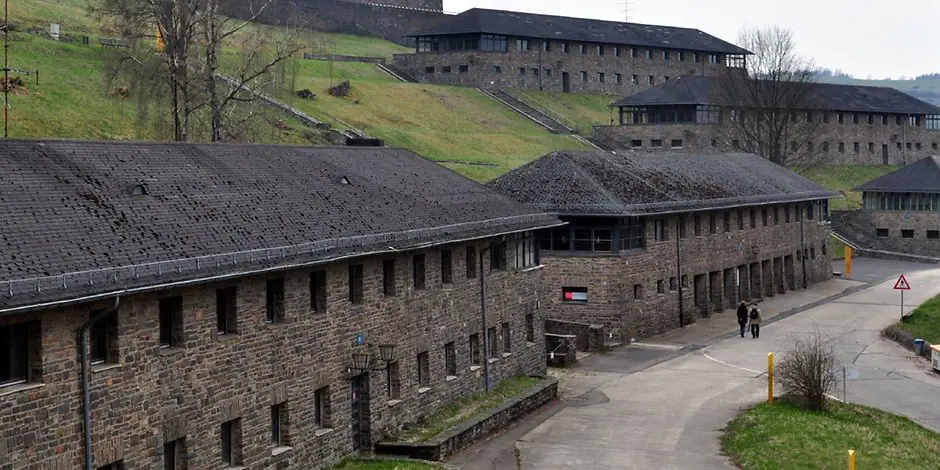
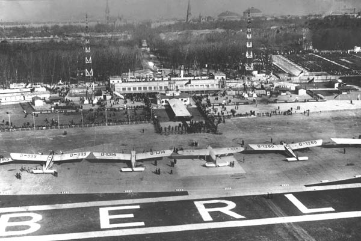
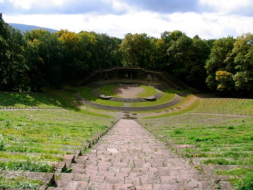
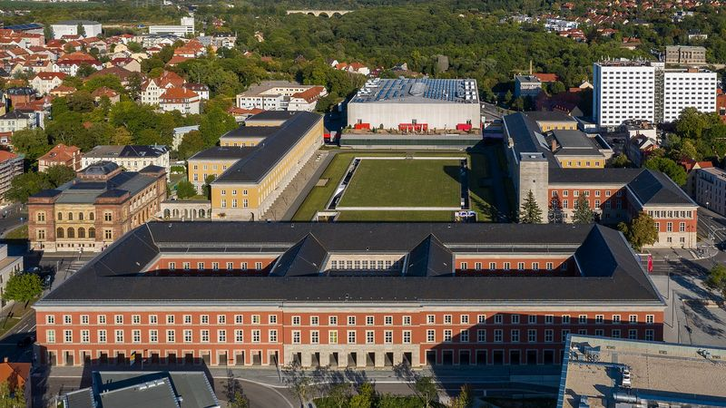

Bauwerke
der
NS
Architektur der NS-Zeit
von Max, Elisabeth und Flo
Hitler hatte viele Vorstellungen, was die Architektur in der NS-Zeit betraf. So wollte er größere und monumentalere Regierungs -und Versammlungsgebäude erbauen sowie Schulen und Fortbildungsstätten, welche teils auch für seine Offiziere gedacht waren. Während dieser Zeit verbesserte sich die Infrastruktur durch den Bau von Reichsautobahnen, Brücken und Staudämmen. Durch verschiedene gute Baumaßnahmen sank außerdem die Arbeitslosigkeit, was viel Zuspruch in der Bevölkerung fand. Für seine Partei, die NSDAP, errichtete er einen Hauptsitz, welcher sich zunächst im sogenannten „Braunen Haus“ in München befand. Er wollte außerdem, dass sein Volk zu einer großen Gemeinschaft wuchs, indem er verschiedene Kultstätten errichtete (z.B. die Thingstätte in Heidelberg, zu welcher ihr im Anschluss noch weitere Informationen bekommt) sowie Gauforen in verschiedenen Stätten. Wir zeigen euch das Gauforum in Weimar.
Reichsbankgebäude Berlin
- Bauzeit: 1934-1940
- Architekt: Heinrich Wolff
- Lage: Berlin-Mitte
- Heute: Standort der Deutsche Bundesbank, sowie verschiedener Bundesämter
- Beteiligung „moderner“ sowie „traditionalistischer“ Architekten
- Natürliche zeittypische Merkmale wie einer Natursteinverkleidung oder eine typische „NS-Geste“ wie die starre und monumentalisierende Hauptfront
- Seit 1990 diverse Instandsetzungs- und Modernisierungarbeiten

Führerbau am Königsplatz in München
- Bauzeit: 1933-1937
- Architekt: Paul Ludwig Troos
- Wichtig zur Repräsentation
- Hitlers Büro sowie Arbeitsräume seiner Stellvertreter
- 1938: Unterzeichung des Münchner Abkommens
- Blieb im Krieg unversehrt
- Heute : Münchner Musikhochschule
Reichsparteitagsgelände/Zeppelinwiese
- Architekt: Albert Speer
- Einziger, noch heute erhaltener Ort des Reichsparteitagsgeländes
- Einziges Bauwerk war die Zeppelintribüne, der Rest war nur geplant
- Ort der Reichsparteitage von 1933-1938
- Aufmarschplatz Hitlers
- geplant war außerdem das Deutsche Stadion in Nürnberg ->bot Platz für 400000 Menschen ->Austragungsort der Nationalsozialistischen Kampfspiele
NS Ordensburg Vogelsang Gemünd
- Bauzeit: 1934-1936
- Architekt: Clemens Klotz
- Lage: Eifel
- Ideologie: Ausbildungsort zur Fortbildung der regionalen Verwaltung besetzter Gebiete etwa in der Ukraine, im Belarus und den baltischen Staate
- Ausdruck der Überheblichkeit und Menschenverachtung sowie von Macht
- Nutzung: Schulungsstätte für den zukünftigen Führungsnachwuchs der NSDAP
- Heute: Vogelsang IP-> „Internationaler Platz für Vielfalt, Toleranz und ein friedliches Miteinander sowie ein Mahnmal

Große Halle
- Neuer Mittelpunkt der Regierungsgebäude
- Planmäßig 315m lang und 320 hoch
- Platz für etwa 180.000 Personen
- Berlin sollte Weltmetropole werden (Umbenennung zu Germania)
- Realisierung der Großen Halle bis heute umstritten
- Bau wurde verhindert durch 2. Weltkrieg
- Neues größtes Gebäude der Welt
Flughafen Berlin-Tempelhof
- „Mutter aller Flughäfen“
- Bauzeit: 1936-1941
- Weniger Beeindruckung durch besondere Architektur vielmehr durch Größe und Monumentalität
- Damals das größte Gebäude des Kontinents
- Architekt: Ernst Sagebiel
- Aufbau: 100m lange Abfertigungshalle (Symmetrieachse der Gesamtanlage), 400m lange, stützfrei überdachte Flugsteighalle, an beiden Seiten jeweils die Hangars, alle 70m blockhafte Treppenhaustürme
- Gesamtlänge: ca. 1200m

Thingstätte Heidelberg
- Bauzeit: 1934-1935
- Architekt: Hermann Alker
- Nach antiker griechischer Theater erbaute Freilichtbühn
- Weitgehend ungenutzt
- Heute: Kulturdenkmal welches für Touristen und Wanderer frei zugänglich ist
- Errichtung vor allem für Propagandaveranstaltungen

Olympiastadion Berlin
- Bauzeit: 1934-193
- Architekt: Werner March
- 1.-16.08.1936: die XI. Olympischen Spiele
- Umfunktionierung während des 2.Weltkrieges ( Bunker, Lagerort von Munition und Lebensmitteln, Ausweichstandort des Rundfunks,..)
- Zweck: für olympische Sommerspiele
- Kapazität: damals für 100.000 Zuschauer
- Orientierung des Aufbaus an antike Sportstätten
- Heute: Heimspielstätte für den Fußballverein Hertha BSC oder andere Events (z.B. Konzerte)
Gauforum Weimar
- Bauzeit: 1936-1943
- Architekt: Alois Degano
- Nutzung für Propaganda sowie Verwaltung
- Bestehend aus ursprünglich 5 Großbauten, Verwaltungsbauten für Reichsstatthalter und Gauleiter sowie der NSDAP und der Deutschen Arbeitsfront
- Planmäßig als Regierungs -und Parteisitz gedacht
- Darstellung demonstrativer völkischer Ideologie und nationalsozialistischen Ideen von Arbeit, Leistung und Gemeinschaft in Form einer baulichen Gestalt
- Umplanungen Weimars zur „Gauhauptstadt“
- Große „Halle der Volksgemeinschaft“ mit etwa 20.000 Stehplätzen
- Heute: Thüringer Landesverwaltungsamt
